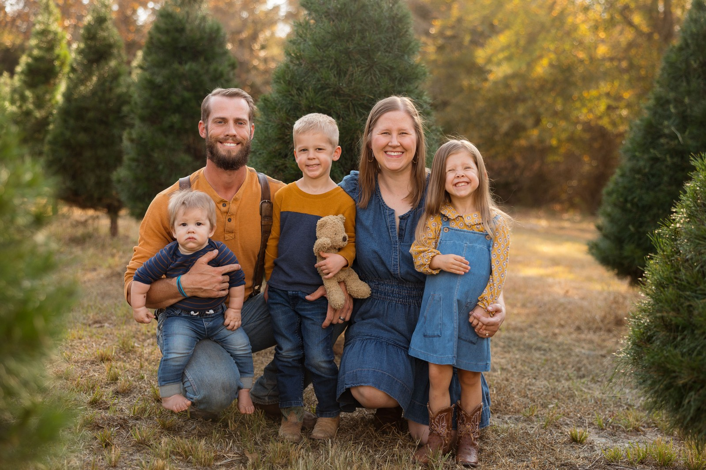
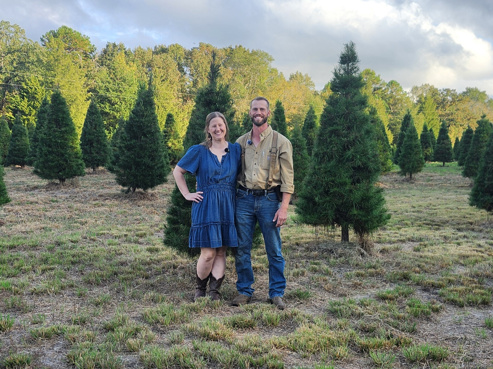
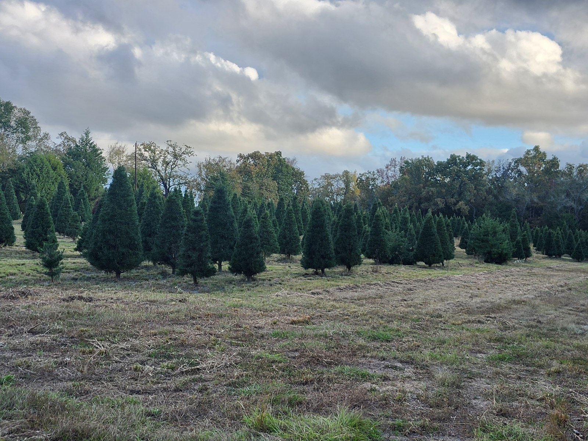
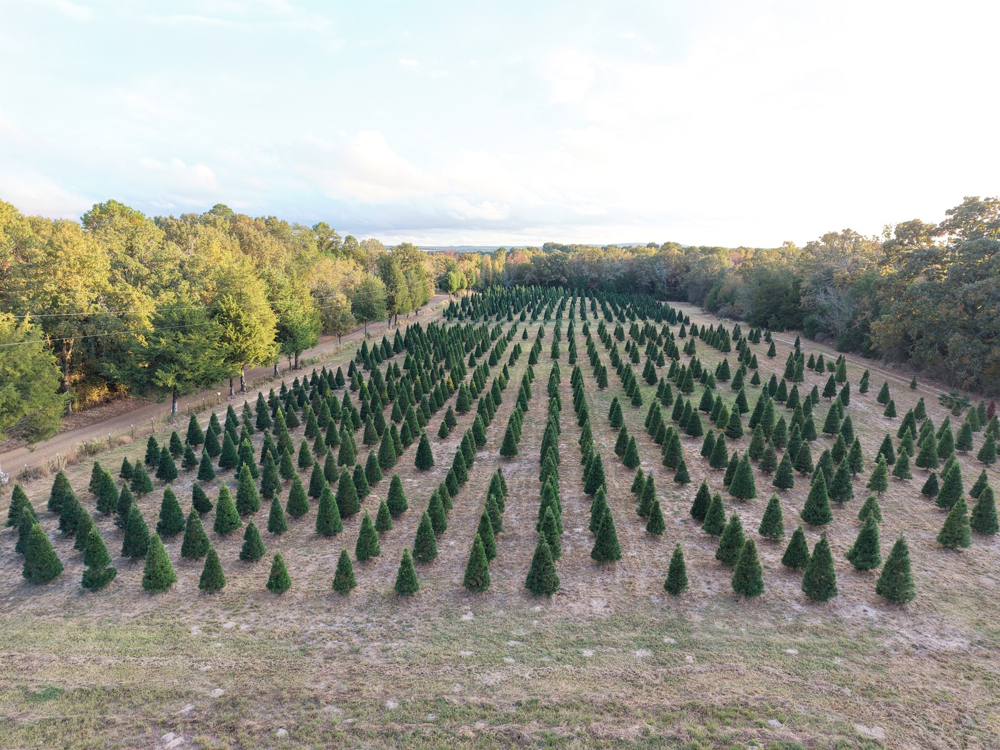

Neighbor Story · Brownsboro
Choose Your Own Tree, Cherish Time Together, and Slow Down This Christmas Season at Native Branch Christmas Tree Farm
Off FM 314 near Brownsboro, just off Hwy 31, about 15 minutes from Chandler and 30 minutes from Tyler, Ben and Ellen Clayton open their family farm on Black Friday with choose-and-cut Virginia pines, hayrides and free hot chocolate.

There is a slower way to start Christmas in East Texas. At Native Branch Christmas Tree Farm, families ride a hayride out to a field of Virginia pines, choose a tree together, cut it down themselves, and linger by the campfire with a cup of hot chocolate.
Ben and Ellen Clayton open the farm for the season on Black Friday, November 27, at 9 a.m., and admission is free.
“We just really want people to be able to get away from the hustle and bustle. You really can’t love people well when you’re in a hurry.”Ellen Clayton
“We love that it’s just a big property,” Ellen said. “It’s so peaceful and quiet. I think just being outside is so calming and worshipful.” Their hope, she said, is that people slow down and “experience peace and joy.”
A family farm with deep roots
The farm sits on 50 acres that have been in Ben’s family for six generations. His grandmother was born on the property. For years the land was leased for cattle, until Ben and Ellen asked his parents whether they could clean it up and plant Christmas trees.
Ben grew up in Sherman, and his family moved back to Tyler in 2000. Ellen is from Houston and went to Texas A&M. They met while working at Pine Cove Christian camp. They have been married almost ten years, live in Chandler, and are raising three young children.

The idea came from a friend Ben worked with at Pine Cove who ran his own Christmas tree farm for 30 years. “He’s like, ‘Ben, you really ought to think about doing Christmas trees,’” Ben said. “The hardest part is having the land, and y’all have the land.”
Ben didn’t take the idea seriously at first. The friend kept bringing it up, and eventually Ben bought him lunch and asked how it worked. “I was like, that would sound really cool to involve my family in, and it would be a great place to create culture to invite other families into,” Ben said.
Next they had to ask Ben’s parents, who own the land. They said they would think about it. A month or two later, at a family holiday gathering, his parents handed them a pile of Christmas tree–themed gifts and announced, “We’re so excited, we’re starting a Christmas tree farm.” Ben said: “I was like, oh, I guess I need to order those seedlings.”
They planted the first field when their oldest son was two weeks old, Ellen at home with the baby while Ben worked in the rows. A Virginia pine takes about four years to grow to selling size, so the early years were all planting, watering and waiting. Two dry years in a row each killed about half of a field, and Ben replanted both times. He now plants about a thousand seedlings a year, waters the northern fields with drip irrigation from the farm’s pond, and prunes every tree twice a year to keep the classic Christmas-tree shape. The farm’s Facebook page calls it “a true labor of love in this Texas heat.”
A small business, and then some
The tree farm isn’t Ben’s only business. He also owns Hinterland Trades, based in Chandler, which repairs sprinklers and fertilizes and sprays lawns and small acreage. He learned the trade on the grounds crew at Pine Cove, where he picked up irrigation, fertilizing, spraying and “a little bit of horticulture.” The two businesses fit together. His friend’s pitch was that trees “would supplement y’all’s business well to do it in the off-season,” and the timing works: when the lawn calls slow down in the fall, the trees are almost ready. “Right now nobody’s calling, but we’re gearing up,” Ben said of the fall. He plans to run Hinterland Trades from the farm starting next year.
He also draws on his own trade on the farm. He ran pipe from the pond to drip lines in the northern fields (“I know a sprinkler guy,” he joked), and he handles the spraying for pine tip moth himself. “I take care of the trees 90% of the time by myself out here,” Ben said. During the selling season, Ellen’s parents come up from Houston and Ben’s parents pitch in, with his dad and Ben driving the tractors.
This will be the farm’s third season to be open for choose-and-cut. Roughly 1,100 trees should be ready this year across two fields.
Taking the next step in faith
Ask the Claytons how all of this came together and they point to their trust in the Lord. “I think part of it is living in tune with God and doing the next right thing,” Ben said. “There’s a tremendous amount of trust that comes along with that.”
Ben says he never pictured himself here. “I was the most shy, scared little boy you’d ever meet. Even as a young man in my 20s, I was just terrified of a lot of things,” he said. “Jumping out on my own to start a business or do something like this just was not anything I dreamed of doing. But through discipleship and then through just taking steps of faith… I believe that our faith is a series of steps, that you always have to say yes to God on a deeper level.”
“God is the provider. … We are faithful, and God provides the work.”Ben Clayton, on being self-employed with a family to support
“Part of the journey for us is just doing something rather than nothing,” the Claytons said. “We just spent a lot of our lives being afraid and passive, trying to stay in a box and be safe, and we’re just tired of living that way. … I want to make a difference and make a change.” Ben put it this way: “I’m not going to stand before God at the end of time being the guy that buried his talent in the ground.”
What’s in a name
Both words in the name carry meaning. “Native” honors the family’s six generations on this land and Ben’s Chickasaw heritage on his mother’s side. The farm’s logo is half arrowhead, half Christmas tree. “Branch” points to the prophet Isaiah’s promise of a shoot growing from a stump, a righteous Branch. It also stands for branching out and making the farm a place that gathers people in.
“A shoot will come up from the stump of Jesse; from his roots a Branch will bear fruit.”Isaiah 11:1 (NIV)
For the Claytons, the farm is a way to take the commercialization out of Christmas and bring the family back into it. Ben wants to invite people out to “our tree farm where things are slower,” where “people can bring the whole family, have fun.”
A day on the farm

When you arrive, a tractor-pulled hayride carries you out to the fields. You choose a hand saw from the rack, pick your tree, cut it down and drag it back to the trailer. Ben is usually nearby to coach first-timers. His tip: have someone push on the tree while another person saws, so the blade doesn’t get pinched.
Back at the barn, the crew shakes out the loose needles, drills the trunk if your stand needs it, and wraps the tree in netting for the ride home. Then there’s plenty of reason to stay awhile:
- Free hot chocolate, now served from a barn with its own electricity
- A campfire, with s’mores packets for sale in the shop
- A kids’ scavenger hunt. Finish it and you earn a free s’more.
- A free ornament-decorating table for kids
- A playground, picnic area and lawn games
- A gift shop in the barn with handmade local items
- Lilo, the farm’s pasture pony, who came from Pine Cove
Families with kids usually stay an hour or two. “I want it to be a family-friendly place,” Ben said. He was homeschooled, and he remembers activities where everyone from infants to seniors did the same things together. “The parents can’t rest or relax unless the kids are happy.”
“Shared experiences build trust. When you share that experience with your family, your kids, extended family, friends, it does deepen your relationship.”Ellen Clayton
Ellen has “very fond memories of pulling the tree out growing up and decorating it,” she said, and she talks about “adding more layers to that” — time together in the field, a tree the whole family chose, and a slower afternoon on the farm.
Trees for every living room

Native Branch grows Virginia pines, and most families want a tree between five and seven feet tall. Prices are set by height, in six-inch steps. Approximate 2026 prices are about $55 for a five-footer, about $66 for a six-footer and about $100 for an eight-footer, before tax. Taller trees cost more per foot. For high ceilings the farm has kept a few giants, and its two 13-footers are the tallest on the property. One of them is going to the Caldwell Zoo for a lighting ceremony that benefits the zoo.
The drive out is easy, too. County Road 3600 was repaved two years ago, and fresh tar and rock went down this year. “It’s easy to get out here,” he said. The farm sits off FM 314 near Brownsboro, just off Hwy 31, about 15 minutes from Chandler and 30 minutes from Tyler.
Make it a tradition
The Claytons are honest that a small tree farm takes years to pay off. Every tree needs four years of watering, spraying and pruning before anyone can take it home, and family members volunteer during the selling season. Every tree you cut, every hot chocolate you sip and every gift you buy in the barn helps keep a young local family business growing.
“We look forward to becoming part of your Christmas tradition,” the farm says on its Facebook page. This year, make it yours.